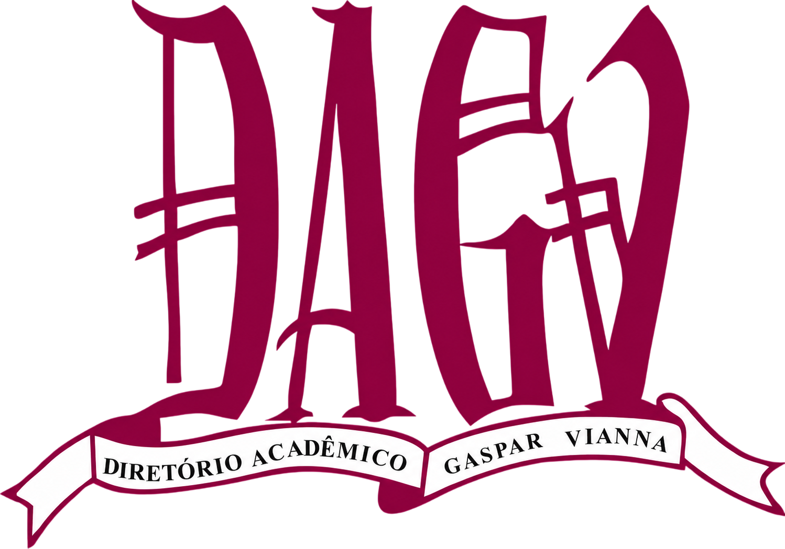

Medicina UFTM · Desde 1954
Conheça o
Diretório Acadêmico
Gaspar Vianna
Uma entidade fundada por estudantes, para estudantes. Mais de 70 anos representando a voz da Medicina na UFTM — com história, legado e um nome que carrega ciência e coragem.
O que é o DAGV?
Entidade representativa dos estudantes de Medicina da UFTM, presente na vida acadêmica desde os primeiros anos do curso.

A voz dos estudantes de Medicina da UFTM
O Diretório Acadêmico Gaspar Vianna (DAGV) é a entidade representativa oficial dos estudantes do curso de Medicina da Universidade Federal do Triângulo Mineiro (UFTM), em Uberaba — MG. Fundado originalmente como Centro Acadêmico Gaspar Vianna em 1954, ele é um dos diretórios acadêmicos mais antigos e atuantes do interior de Minas Gerais.
Sua função é representar, defender e articular os interesses dos acadêmicos de Medicina diante da instituição, de órgãos estudantis nacionais e da sociedade. O DAGV organiza assembleias, projetos sociais, eventos culturais e científicos, e mantém canais permanentes de escuta com os alunos.
Organizado em oito coordenadorias temáticas — Comunicação, Finanças, Ensino e Pesquisa, Sociocultural, Representação Estudantil, Tecnologia, Secretaria e Coordenação Geral — o DAGV garante que cada dimensão da vida acadêmica seja representada de forma especializada e democrática.
História e Fundação
De Centro Acadêmico a Diretório — mais de sete décadas de representação estudantil no coração da Medicina em Uberaba.
A criação da FMTM
A Faculdade de Medicina do Triângulo Mineiro (FMTM) é criada em Uberaba, dando início ao curso de Medicina que formaria gerações de médicos para o Triângulo Mineiro e o Brasil. Já em seu primeiro ano, os alunos demonstraram interesse em organizar uma representação estudantil formal.
Fundação do Centro Acadêmico Gaspar Vianna
Em 1º de maio de 1954, acontece a primeira reunião do Centro Acadêmico Gaspar Vianna (CAGV), com a presença do diretor da FMTM, Mozart Furtado Nunes. Os alunos elegeram Wander Magalhães Moreira como primeiro presidente. Uma comissão foi formada para elaborar o estatuto da entidade recém-criada.
"Num ambiente de cordialidade, proporcionado pelo nosso diretor, foi encerrada a primeira reunião, que causou a todos nós muita alegria e contentamento."
— Ata do CAGV, 1954
Jornal Epíplon
O CAGV inaugura a publicação do jornal acadêmico Epíplon, com proposta de ser o companheiro de todas as turmas — do calouro ao formando. Era o início da comunicação estudantil organizada na FMTM.
Inauguração pelo Presidente Juscelino Kubitschek
Em 3 de maio de 1956, o Presidente da República Juscelino Kubitschek visita Uberaba e inaugura oficialmente o CAGV. Sensibilizado com o empenho dos acadêmicos, JK promete defender a federalização da FMTM — promessa que se cumpriria anos depois com a criação da UFTM.
Sede definitiva no Edifício Vitória Varotto
O Centro Acadêmico Gaspar Vianna passa a ocupar sua sede definitiva no 3º andar do edifício Vitória Varotto, consolidando-se como espaço físico de organização e convivência dos estudantes de Medicina.
De Centro Acadêmico a Diretório Acadêmico
O CAGV passou a se denominar Diretório Acadêmico Gaspar Vianna (DAGV), nome que conserva até os dias atuais. A mudança de Centro para Diretório reflete a evolução da estrutura representativa e o crescimento da entidade ao longo das décadas.
Gestão Guimarães Rosa · 2026
Com mais de 70 anos de história, o DAGV segue como a principal voz dos estudantes de Medicina da UFTM. A gestão atual mantém vivo o legado da entidade com projetos sociais, representação estudantil ativa e uma cultura de participação democrática e transparente.
Quem foi Gaspar Vianna?
O cientista que dá nome ao nosso diretório — uma vida breve e um legado eterno para a medicina brasileira.
Um gênio precoce da ciência brasileira
Gaspar de Oliveira Vianna (1885–1914) foi um médico e cientista brasileiro cuja atuação precoce deixou um legado duradouro para a medicina e a pesquisa científica no país. Nascido em Belém do Pará, mudou-se para o Rio de Janeiro para ingressar na Faculdade de Medicina, onde se destacou como aluno aplicado e apaixonado pela pesquisa científica.
Durante a graduação, iniciou colaboração com o Instituto Oswaldo Cruz — então o principal centro de pesquisa biomédica do Brasil — com especial interesse em parasitologia, histopatologia e medicina tropical. Seu talento era evidente já nos primeiros anos de formação.
Sua maior contribuição se deu ao lado de Carlos Chagas, aprofundando o estudo das doenças parasitárias e propondo o uso do tártaro emético (antimonial trivalente) como tratamento para a leishmaniose tegumentar americana — uma descoberta pioneira que abriu caminho para terapias contra doenças parasitárias em todo o mundo.
Apesar da carreira brilhante, Gaspar Vianna faleceu em 1914, aos apenas 29 anos, vítima de tuberculose. Em poucos anos de trabalho, deixou um legado científico que o consagra como um dos grandes nomes da medicina experimental brasileira do início do século XX.
Por que o nome Gaspar Vianna?
Ao batizar o diretório com o nome de Gaspar Vianna, os estudantes de Medicina da FMTM prestaram homenagem a um cientista que, assim como eles, escolheu a medicina como vocação de vida. Gaspar morreu jovem, como jovens são os acadêmicos que compõem o DAGV a cada geração.
Seu espírito de curiosidade, rigor científico e compromisso com a saúde pública inspira até hoje a missão do diretório: formar médicos melhores, cidadãos mais conscientes e profissionais mais humanos.
Representar não é apenas ocupar um cargo — é ouvir, agir e transformar a experiência acadêmica de cada estudante de Medicina da UFTM.